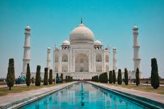

TAJ MAHAL

El Taj Mahal es un mausoleo construido por el emperador mogol Sha Jahan en honor a su esposa preferida, Mumtaz Mahal (la «Elegida del Palacio» o la «Joya del Palacio»), muerta al dar a luz.